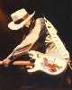

Stevie Ray Vaughan
Тексты | Ноты | Брям
Статья о Stevie Ray Vaughan из
журнала Musician

- Pride And Joy (426k)
- В этой культовой песне вы услышите самые
типичные для SRV оттяжные гитарные рифы.
- Rude Mood (540k)
- Этот чрезвычайно бодрый инструментал поднимает
больных с постели, если только они не глухи.
Кстати, он получил в свое время премию Гремми в
номинации "лучшая инструментальна
композиция года".
- Empty Arms (401k)

Фотографии с разных
концертов
Рекомендуемые записи:
- Texas Flood (1983, Epic 460951 2)
- In Step (1989, Epic)
- In The Beginning (1992, Epic 472624 2) - Broadcast Live from Austin,
Texas, April 1, 1980. Самая первая запись SRV.